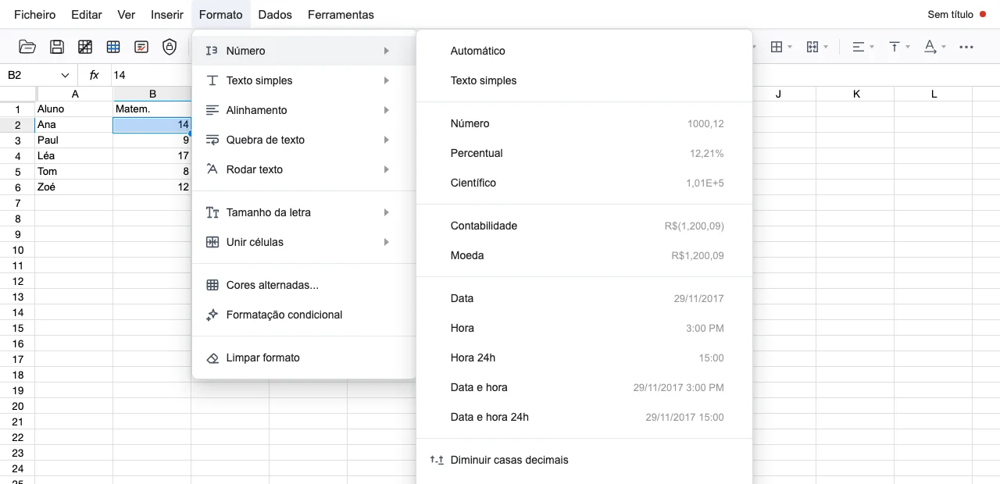

A interface

De cima para baixo: a barra de menus, a barra de botões, a barra de fórmulas, a folha, os separadores de folhas e o zoom.
Os menus
| Menu | Conteúdo |
|---|---|
| Ficheiro | abrir, guardar, imprimir |
| Editar | anular, refazer, preencher para baixo, para a direita |
| Ver | grelha, fixar |
| Inserir | imagem, gráfico, caixa de verificação, lista pendente |
| Formato | número, texto, alinhamento, união, cores alternadas, formatação condicional |
| Dados | ordenar e filtrar |
| Ferramentas | proteger, este manual (Manual do utilizador), DocTools, código-fonte, versão (Acerca de...) |
Um visto assinala uma opção ativa: grelha visível, células fixadas, negrito, filtro, livro protegido.

A barra de botões
| Botão | Função |
|---|---|
| abrir, guardar | |
| mostrar ou ocultar a grelha | |
| cores alternadas | |
| formatação condicional | |
| proteger; azulado quando o livro está protegido | |
| inserir um gráfico | |
| inserir uma imagem | |
| anular, refazer | |
| limpar a formatação | |
| percentagem, menos ou mais casas decimais | |
| Automático, Arial, 10 | formato de número, tipo de letra, tamanho |
| negrito, itálico, sublinhado | |
| cor do texto, do fundo | |
| limites, união | |
| alinhamentos, rotação, moldagem do texto | |
| fixar | |
| soma automática e outras fórmulas | |
| ordenar e filtrar |
A pequena seta de um botão abre as suas opções; o próprio botão repete a última. Numa janela estreita, os últimos botões estão atrás de .
A barra de fórmulas
- À esquerda, a caixa de nome: o endereço da seleção, ou o nome do intervalo. A sua seta lista os intervalos com nome e abre o gestor de nomes.
- À direita de fx, o conteúdo da célula, incluindo a fórmula: pode ser modificado aí.
A folha
- O clique direito abre um menu conforme o local: célula, cabeçalho de coluna ou de linha, separador de folha.
- A folha inicial tem 84 linhas e 60 colunas (A a BH). Acrescentam-se mais com o clique direito, Inserir (linhas e colunas).
- A alça azul no canto da seleção preenche.
Separadores e zoom
Em baixo, acrescenta uma folha, lista-as todas (as folhas). À direita, − e + regulam o zoom; um clique na percentagem propõe de 10 % a 400 %.
Anular
ou Ctrl Z anula, , Ctrl Y ou Ctrl Shift Z refaz: entradas, colagens, formatações, inserções. O histórico recomeça do zero quando se abre um livro, se mostra ou oculta a grelha, se protege o livro, ou se acrescenta um nome ou uma regra de formatação condicional. Os gráficos não fazem parte dele: modificam-se ou eliminam-se com os seus botões.